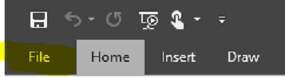

FAQ
Software not being installed
Installation stuck in AppCenter
Ensure you have Requirements met: -
- Winddows 10
- Office 2016, 2019
Skype Not Found
Installation Completed but App not Found
Search for lync.exe
Signing in Issue
Signing in Issue Contacting Sever and Signing in… (Taking a long time)
Try clicking on “Cancel Sign-in” Next, click on “Delete my sign-in info”. Then Sign in using your Saudi Aramco email. Also make sure to write you email address in this format firstname.lastname@aramco.com
Verifying certificate
Cannot sign in due to a problem verifying certificate
Kindly, make sure you add the following URLs in the IE Exceptions list:
- Go to IE › Internet Options › Connections › LAN settings › Advanced
- Under Exceptions box Add “sfbp*.aramco.com;sfbwac.aramco.com;webconf.aramco.com;sip.aramco.com".
- OK › OK › OK
- Finally, Close the IE and try to login.

Not Aramco.com Domain (aramcochemicals, aramcotrading?)
Below are the instructions need to be followed by employees from Aramco Trading Company as well as Aramco Chemicals Company
Step 1: Click on options (gear icon)
Step 2: Personal > Advanced…
Step 3: Manual Configuration > Internal Server: sfbp03.aramco.com > OK
Audio and camera issue:
Audio and camera issue
Kindly, make sure your monitor has the cable shown in the below photo connected to your PC. Try reconnecting it again if you already have it.
This cable will let your PC recognize the Microphone and Camera built-in in your monitor.

Audio settings:
Configure Audio settings
Click on Setting on Skype Interface
Click Audio Device
Firewall Issue
- Change Settings (require admin privilege)
- Add Skype for Business and click OK.
If Skype is not in the list:
- Allow another app…
- Brows to “C:\Program Files (x86)\Microsoft Office\Office16” and choose “lync.exe”
Delegation
How the Manager can delegate access for his secretary to initiate Skype meetings from his calendar?
To address the Skype delegation issue, please follow the below steps.
Steps to do from delegator’s machine (Manger, VP, SVP machine):
- Remove existing delegation from Outlook of delegator then click OK.
- Sign-Out and re-Sign-in from Skype for Business client.
- Add the delegate again to Outlook.
- Wait for 2 minutes
- Sign-Out and Delete Sign-In Information from Skype For Business client
- Wait for 2 minutes
- Sign-In to Skype For Business client
- You should see a new group called “Delegate”, and the delegate’s name will be in it.
Steps to do from delegate’s machine:
- The delegate Skype For Business client should have a new notification similar to the below:
- The delegate then should add a shared calendar of the delegator in MS Outlook
- To create a Skype meeting on behalf of the delegator, make sure it is the only calendar selected before clicking on “New Skype Meeting”
Enable Skype Add-In
Enable Skype Add-In from Outlook
Please check if the skype add-in is enabled. If it is not, please enable it as shown below. Try to close Outlook and open it again if it did not work after enabling it.

Skype meeting permission error
I have delegation, but still I got permission error
Please follow the following steps:
- Make sure that you are delegated by checking “people I manage call for”
- sign out from Skype.
- create a skype meeting on behalf of someone else.
- the following will be appear, Click Ok
- Click Skype meeting again.
- It might give you the same error, so please try after half hour to one hour.
Let me know what you get.
Thanks
No Client agent in appcenter:

This means that the CCM agent is curropted or not installed, please contact ITHelpDesk to reinstall CCM client “Configuration Manager” for you.
Cannot Join Meeting:
When trying to join meeting, Operation was unsuccessful

Options > Skype Meetings > Make sure user select “Skype for Business” and not the phone number “+966…”
Open Configuration info:
How to Open config info to get server name
Please follow the steps:
Ctrl + Right-Click on Skype icon > small menu should appear
Select Configuration information from the menu
Take a screenshot of the info, specially Skype for Business server.
Thank you for your cooperation!
Calendar Delegation
Delegate someone to your Calendar
Kindly go to…
File > Account Settings > Delegate Access > Add > Search for the user to be delegated > OK
Find and selected the user to be delegated then >

Cannot Synchronize Address Book
Kindly signout and then sign-in again.
Skype Status Doesn’t show in Outlook
Outlook Does not show the Skype status of users
First Solution:
Sometimes the default software for making calls for the device is still set as “eSpace” and not “Lync”. To check go to “regedit” > HKEY_CURRENT_USER\Software\IM Providers. If the value for “DefaultIMApp is “eSpace then set it to “Lync”. After that, restart both Outlook and Skype. If it is already set to “Lync” then try the second solution below.
Second Solution:
Kill both Outlook and Skype.
Then go again to the “regedit” and delete the user’s registry key under HKEY_CURRENT_USER\Software\Microsoft\Office\16.0\Lync\firstname.lastname@aramco.com
After that open Outlook then Skype (in that order).
Dial in phone number is not shown
Request for Skype Dial in details
Currently we do not support external connection, but we are working on it through web.
Regarding the telephony number, there is not integration between Skype and telephony systems.
Cannot Join meetings
Cannot join meeting
Also, kindly, make sure you add the following URLs in the IE Exceptions list:
- Go to IE › Internet Options › Connections › LAN settings › Advanced
- Under Exceptions box Add “sfbp*.aramco.com;sfbwac.aramco.com;webconf.aramco.com;".
- OK › OK › OK
- Finally, Close the IE and try to login
Frequent call disconnection:
Solution 1
The main cause of this issue is when there is more than one user logged in to the same machine. If the user who is in the background left Skype logged in before switching to the other user, the other user will experience frequent disconnection in Skype calls roughly every 20-30 seconds. Quick way to solve this issue is to ask the user to restart his machine to force the user in the background to be killed.
To check if there is another user on the background go to
Task Manager < Users (Tab) check if there is more than one user
Solution 2
Also kindly, make sure you add the following URLs in the IE Exceptions list:
- Go to IE › Internet Options › Connections › LAN settings › Advanced
- Under Exceptions box Add “sfbp*.aramco.com;sfbwac.aramco.com;webconf.aramco.com;".
- OK › OK › OK
- Finally, Close the IE.
- After adding the exceptions, open cmd and type "gpupdate /force" and try to login.

If not working, try clearing the cache in SIP and Tracing folder of Skype.
I’ve replaced my headset with my own headset and it works fine.
Most likely, the smart Sensor is broken and that is why it is disconnecting the call.
The Plantronics Blackwire C520-M is a Binaural USB headset solution for Microsoft Lync users.
Main features include noise cancelling microphone, Hi-Fi Stereo Sound, Wideband audio and Sound Guard protection - The comfortable light weight design provides a secure fit that can be worn all day.
The Plantronics Blackwire C520-M has integrated Smart Sensor Technology that allows you to answer an incoming call by simply picking up the headset.
Thanks.
If it did not work please collect the following info to send it to Microsoft support.
Please send Skype Support the following information.
- Network ID (e.g. JULAIDFA)
- Skype server name (e.g. CW-00097.aramco.com)
- Call type (e.g. peer-to-peer)
- Location (e.g. Yanbu)
- CPU utilization (e.g. from task manager)
- Connection Type (Ethernet, WIFI)
- Tracing folder zipped (IMPORTANT!)
This will help us find a permanent solution for this common issue.
Steps to get Skype server name:
Below is the steps you can send to the users to help them get the Skype server name they are connected to:
1. Ctrl + Right-Click on Skype icon (Small menu should appear)
2. Select Configuration information from the menu
3. Take a screenshot of the info, especially Skype for Business server.
Steps to get CPU utilization:
Open task manager
Steps to get the Tracing folder zipped (IMPORTANT!)
Make sure you exit from Skype first
Go to this location in your machine
Compress/Zip the whole Tracing folder and attach it to the email. If the file is big share it with me via cloud and provide the link instead.
Thank you for your cooperation
Proxy could not connect to the destination in time
Error message about proxy cannot connect
Webconf.aramco.com should be added to the Explorer exceptions as follows
Kindly, make sure you add the following URLs in the IE Exceptions list:
- Go to IE › Internet Options › Connections › LAN settings › Advanced
- Under Exceptions box Add " sfbp*.aramco.com;sfbwac.aramco.com;webconf.aramco.com;".
- OK › OK › OK
- Finally, Close the IE and try to login.
Delegation permission issue
Delegation is granted, but not working
Greetings,
To address the Skype delegation issue, please follow the below steps.
Steps to do from delegator’s machine (VP,SVP machine):
- Remove existing delegation from Outlook of delegator.
- Wait for 15 min.
- Sign-Out and re-Sign-in from Skype For Business client.
- Add the delegate again to Outlook.
- Wait for 2 minutes
- Sign-Out and Delete Sign-In Information from Skype For Business client
- Wait for 2 minutes
- Sign-In to Skype For Business client
- You should see a new group called “Delegate”, and the delegate’s name will be in it.
Steps to do from delegate’s machine:
- The delegate Skype For Business client should have a new notification similar to the below:
- The delegate then should add a shared calendar of the delegator in MS Outlook
- To create a Skype meeting on behalf of the delegator, make sure it is the only calendar selected before clicking on “New Skype Meeting”
Please let me know if you do face any issues with the provided steps.
- Please collect the following data
- Server name, version and Tracing file as shown in the picture
- Get the Tracing file, and compress it by Right-Click send to compress
- For the version open settings help about Skype for Business
- Please share these files with skype support.
Skype add-in is not working in outlook:
Add-in disappear
Change the following Registry key to enable the Skype add-in in Outlook at all times
HKEY_CURRENT_USER\Software \Microsoft\Office\Outlook\Addins\UCAddin.LyncAddin.1
Change loadBehaviour to 3 instead of 0.
Skype High CPU utilization:
see Skype Process taking high CPU (20% and above
Please follow these steps if you see Skype Process taking high CPU (20% and above ) and share Dump File with me
Open Task Manager :
Dump File location :
How to install Skype 2019:
How to install Skype 2019
Greetings,
To Install Skype 2019, Office 2019 must be installed first using the following link.
https://appcenter.aramco.com.sa/esd/Items/Details?PackageId=2348Note: Office 2016 will be upgraded to 2019
Thanks
Calling Feature is disabled
I cannot call someone from outlook
Please use the following to call from outlook,
Thanks
How to control meeting settings
I cannot join a meeting, It put me in lobby?
Please use the following to call from outlook,
Thanks
Export Meeting Participants List During Meetings
How can I export participants list who attended the meeting?
Steps to export participants list:
While you are in a meeting call, click on My Notes…
Double Click on Quick Notes > OneNote will open listing the participants. The list will be updated automatically during the meeting. So, new participants will be added to the list in real-time in addition to the participants who share content during the meeting.
Example
sfbp*.aramco.com;sfbwac.aramco.com;webconf.aramco.com;
Call History is Missing & Outlook Integration Error
Could not find any history record in Skype
- Disable cached mode in Outlook.
- Close Outlook and “exit” from Skype. (Exiting from Skype is not the same as closing it)
- Enable cached mode in Outlook with a period of 1 year
Cached mode can be modified from:
Note: - New edit 2021 you cannot do it without set pass as administrator
So, get the set pass access the go to registry Editor than Follow this path
Than follow this path after you enter Network ID:
Computer\HKEY_CURRENT_USER\Software\Policies\Microsoft\office\16.0\outlook\cached mode
Computer\HKEY_USERS\Your User Network ID \Software\ Software\Policies\Microsoft\office\16.0\outlook\cached mode
After that delete the Enable file than back to outlook client: -
- Disable cached mode in Outlook.
- Close Outlook and “exit” from Skype. (Exiting from Skype is not the same as closing it)
- Enable cached mode in Outlook with a period of 1 year

PowerPoint Video does not play
Could not be able to play video in powerpoint
- Open your PowerPoint slides
- Click on File Tab 
- Click on Optimize Compatibility
- After the loading is done, save your slides.
Video Slowness or Black Screen
User is experiencing slowness in video sharing or other users can only see a black screen.
If the user is using a big monitor, try to lower the screen resolution. This will significantly enhance the performance of video sharing and also could fix the black screen.
General Resolution for other issues
Having still issues even after implementing solutions above?
Delete the Lync registry key and the Tracing folder
Registry key Computer\HKEY_CURRENT_USER\Software\Microsoft\Office\16.0\Lync\firstname.Lastname@aramco.com
Tracing folder (Skype needs to be closed first)
Questions about Outlook
How do get Skype for Business presence status to show up in Outlook?
Skype4B presence status should appear by default in Outlook if the Skype4B client application is running, as shown below:
If this is not the case on your workstation, please do the following:
1. Close the Outlook application.
2. When Outlook is no longer running, open your start menu and type cmd then hit Enter.
3.Type gpupdate /force and hit Enter. Wait until you receive the messages "Computer Policy update has completed successfully." and "User Policy update has completed successfully."
4. Close the Command Prompt and re-open your Outlook and the presence status should now be shown (as long as Skype4B is running on your workstation).
Questions about contacts
How do I add an internal contact to my Contacts list?
1. In the Skype4B main window, click the Add a Contact button.
2. From the dropdown menu, click Add a Contact in my Organization.
3. In the search box, type the person’s name, email alias, or phone number. As you type, a list of people who match the search terms is displayed.
4. Scroll through the search returns list until you come to the person you want to add to your Contacts list. Right-click the person’s search listing, and then click Add to Contacts List.
5. Select a group from the list to add your new contact to.
How do I find contacts within my organization?
In the search field on the Skype4B main window, type the name, email address, or phone number of the person you are looking for.
How do I block contacts from reaching me via Skype4B?
Although your name and email address are displayed to blocked contacts, they can’t reach you through Skype4B. To block a contact in Skype4B:
- Right-click the contact you want to block, click Change Privacy Relationship, and then click Blocked Contacts.
How do I display only those contacts who are online?
Although you can’t completely remove offline contacts from your contacts list, you can send them to a separate group so they don’t clutter it up. Click Options->Contacts List and then select the checkbox labeled Show contacts with away, offline and unknown presences in a separate group. Unavailable contacts will now appear at the bottom of the display, in a group called Away and Offline Contacts.
How do I delete contacts from my Contacts list?
Right-click the contact you want to delete, and then click Remove from Contacts List.
How do I create a group?
1. In the Skype4B main window, on your Contacts list, right-click any group name (for example, Other Contacts), then click Create New Group. Or click the Add a Contact button, and then click Create a New Group.
2. In the space that now opens up at the bottom of the window, type over the phrase New Group to give your group a descriptive name.
How many contacts can I have?
The default maximum number of contacts that can be added is 1000. But your actual limit is set by your support team, so contact them if it seems you’ve hit your limit or if you’re not sure what it is in your organization.
Why does the Relationships view of my Contacts list include people I never added to my list, and how do I get them off of it?
Every contact you interact with via Microsoft Office, whether in your Skype4B contacts list or not, has a "default" relationship with you. Your “unlisted” contacts (that is, those who are not included in your Skype4B contacts list) don’t get displayed in either the Groups view or the Status view. But the Relationships view shows all the contacts on your Skype4B contacts list plus any unlisted contacts whom you’ve assigned a non-default privacy relationship. To remove any of these “unlisted” contacts from your Relationships view, right-click on the contact, click Change Privacy Relationship, and select Auto-assign Relationship.
What does the red star or asterisk next to a contact's status mean?
The red asterisk next to a contact's status indicates that he or she has turned on the Out of Office reply in Outlook.
Questions about Instant Messaging (IMs)How can I make the IM alerts more prominent so I don’t miss incoming IM requests?
Unless you have set notifications so alerts will not display when you are in Do not Disturb mode, Skype4B will by default always send you both a visual alert (in the lower right corner of your display) and a sound alert whenever someone tries to reach you via IM. Just the same, you may occasionally fail to notice an IM request. This is especially likely when you are using multiple screens or when your alert volume is too low or off. To help ensure that your IM alerts are noticeable, try the following:
1. Set your display so Skype4B is always in the foreground when it starts. To do this, click the Options button, click Tools, and then click Always on Top.
2. Drag the slider on the Program Events display panel down to the Microsoft Skype4B 2010 listings.
3. Click Incoming Instant Message. The Sounds display at bottom of the window should read COMMUNICATOR_iminvite.
4. Now click the drop-down arrow next to it and sample some of the other sounds on the list.
5. Once you find a sound you want to use for incoming IM alerts, click Apply. (The Program Events display panel should now read Incoming Instant Message and the Sounds panel should display the name of whatever .wav file you’ve selected.)
6. Click OK. (You can also record your own .wav file for this purpose, and then browse to that file to select it as your IM alert.)
Where can I find previous IM conversations, records of Skype4B calls, or IM requests I may have missed?
By default, if you are using Microsoft Outlook, Skype4B saves all incoming and outgoing conversations in your Outlook Conversation History folder, so you can review previous conversations. To see a list of recent Skype4B interactions added to this folder:
- On the Skype4B main window, click the Conversations tab above the Search input area.
- Click the View More in Outlook link at bottom of the window.
Note If your conversations are not being saved in this Outlook archive, and you want to set up an archive for future conversations, follow these steps:
1. Verify that you are using Microsoft Outlook 2010 or Outlook 2013.
2. In the Skype4B main window, click the Options button, and then click Personal.
3. Click the Save instant message conversations in my email Conversation History folder button, and then click OK.
What types of information can I copy and paste into an IM?
You can copy and paste text, tables, and links from other Microsoft Office products directly into a Skype4B IM. You can't paste images (screenshots, photos, etc.) directly into an IM, but you can paste them onto a whiteboard and display them to others. To do this:
- In the IM conversation window, click Share, click New Whiteboard, click the Insert Image button at bottom of the Whiteboard, and then browse to and double-click on the image you want to display.
Can I use spellchecking in my Skype4B IMs?
No, Skype4B doesn’t currently have built-in spellchecking, in keeping with its intended use as a quick and informal communications method.
Can I add customized emoticons to my Skype4B IMs?
No, you can’t. But there are 80 emoticons in the Skype4B assortment. To see them, click the emoticon icon to the right of the text input area on the conversation window.
How do I change fonts in my IMs?
To change the font, style, size or color for a specific IM you are writing:
- Type your message, highlight the text you want to change, click the Font button in the IM composing area, and then make your selections in the Font window.
To change the default font details for all the IMs you send:
From the Skype4B main window, click the Options button, click General, click Change Font, and then select a default font, font style, font size, and font color. Then click OK. These selections will apply only to IM messages you send, not to those you receive.
To change the default font details for incoming IMs as well (to improve their legibility, for example):
- From the Skype4B main window, click the Options button, click General, click Change Font, and then select a default font, font style, font size, and font color. Then select the Apply settings to incoming messages checkbox, and then click OK.
set an alert to notify me as soon as a particular contact becomes available?
In the Skype4B main window, in your Contacts list, right-click a contact, and then click Tag for Status Change Alerts.
How do I disable IM alert sounds?
You can instruct Skype4B not to play your audible IM and/or phone alerts whenever your presence says Do not Disturb, and you can further instruct Skype4B to notify you only if the person trying to contact you is a member of your workgroup with that privacy relationship. To view and adjust these settings:
- Click the Options button in the Skype4B main window, and then click Alerts.
To turn the audible alerts off altogether:
- Click the Options button in the Skype4B main window, click Ringtones and Sounds, and then clear the Play sounds in Skype4B (including ringtones for incoming alerts and IM alerts) check box.
Can I recall (block the delivery of) an IM?
No, an instant message can’t be recalled once you hit the Enter key to send it.
Questions about presenceHow do I get rid of the Out of Office note in Skype4B?
If your Skype4B account is synced via Microsoft Exchange Server to your Outlook calendar, an out-of-office message appears in Skype4B after you turn on the Out of Office reply in Microsoft Outlook. To get rid of the out-of-office message display in Skype4B, you need to turn off the Out of Office reply in Outlook:
- Click the File tab in Outlook, and then click the Turn off button in the Automatic Replies panel.
Why can’t I set my presence status to "Appear Away"?
Your organization may have turned off the Appear Away status option, on the grounds that it can interfere with the reliability of the presence indicator. If a lot of people use this status constantly, presence in general won’t mean much. Keep in mind that you can also use privacy relationships to avoid interruptions. For example, if you don’t want to be disturbed by most people, you can set your status as Do Not Disturb and then grant certain people permission to interrupt you by adding them to your Workgroup.
What do the settings on the Status options window mean?
On the Status options window you can change the number of minutes that elapse before your presence status changes to Inactive and Away, if you don’t want to use the default settings. You can also have Skype4B automatically detect when you are sharing information from this computer. Skype4B will set your status as Presenting and block others from sending messages to you during that time. To set these presence status options:
1. In the Skype4B main window, click the Options button, and then click Status.
2. Click the up and down arrows to specify the number of minutes before your presence status changes to Inactive.
3. Click the up and down arrows to specify the number of minutes before your presence status changes to Away.
4. Click the appropriate button to control general status (override default settings or accept them), and then click OK.
5. Select the checkboxes labeled Show me as Do Not Disturb when I present my desktop and Show me as Do Not Disturb when my monitor is duplicated to let others know not to interrupt you when you are giving a presentation or otherwise collaborating online from your Skype4B-enabled computer.
How can I give people more information about my status?
Although the presence states in Skype4B are pre-set, you can always write a personal note at the top of the Skype4B main window to provide more details about where you are and what you’re doing. Just click the note display area and type over the note that’s currently displayed.
What do the various presence states mean, which ones are set automatically, and which ones can I set myself?
Here’s a table that describes the contact presence states that people can see, what each state means, and how it gets set.
| Presence Status | Description |
|---|---|
| Available | You’re online and available to contact. Automatic or user-selected setting. |
| Busy | You’re occupied and shouldn’t be interrupted. Automatic (if user is in an Outlook-scheduled conference) or user-selected setting. |
| In a call | You’re in a Skype4B call (two-party call) and shouldn’t be interrupted. Automatic. |
| In a call | You’re in a Skype4B call (two-party call) and shouldn’t be interrupted. Automatic. |
| In a meeting | You’re in a meeting (per Skype4B or per Outlook) and shouldn’t be interrupted. Automatic. |
| In a conference call | You’re in a Skype4B conference call (Skype4B meeting with audio) and shouldn’t be interrupted. Automatic. |
| Do not disturb | You don’t want to be disturbed and will see conversation notifications only if they are sent by someone in your Workgroup. User-selected. |
| Presenting | You are giving a presentation from your Skype4B-enabled computer or are otherwise sharing your desktop and are not to be disturbed. Automatic. |
| Be Right Back | You’re stepping away from the computer for a few moments. User-selected. |
| Away | Your computer has been inactive for a period of time (5 minutes by default; value can be adjusted.) Automatic. |
| Off Work | You’re not working and not available to contact. User-selected. |
| Offline | You’re not signed in. If you have blocked individuals from seeing your presence, you’ll appear offline to them. Automatic. |
| Unknown | Your presence is not known. If others are not using Skype4B as their instant messaging (IM) program, your presence might appear unknown to them. Automatic. |
Questions About Skype Login
Can two users login to Skype on the same machine?
No, Skype for Business can only support one logged in user from one machine.
Questions about audio and videoCan I use Skype4B to make a call?
Yes, you can make a call with Skype4B:
- Skype4B call
A Skype4B call is made from your computer to someone else’s computer who is also using Skype4B (computer audio).
- A Skype4B call placed to a contact rings all their devices that are enabled for Skype4B, such as desktop and laptop computer.
- You can also make Skype4B calls to federated contacts. A federated relationship with other companies is just a virtual alliance that lets you add users from other companies to your contacts lists, send them IMs, make audio, video and conference calls, and exchange presence information.
My Skype calls get disconnected every 30-40 seconds.
Ensure only one user is logged in to the machine. Restart the computer, and login again to resolve the disconnection issue.
For more information, see:
Make, receive and manage a Skype4B audio call Make, receive and manage a Skype4B video callWhy am I having audio problems?
If there’s a problem, a notification is displayed in the conversation window or the Skype4B main window. You can click the notification for more information or suggested solutions. For example:
If you’re not getting sound, check that:
- Your speakers are turned on, both in Skype4B and your computer, and the speaker volume is high.
- The device you’re using is selected on the DEVICES tab, (pause on the phone/mic icon and click the DEVICES tab).
Questions about Online MeetingCan I restrict access to my Skype4B meetings with a password?
No, but there's a similar option. Skype4B meetings you schedule are not publicly listed, so normally only people you send an invite to will have the link to join your meeting. If you'd like to further restrict access, Skype4B offers a "lobby" feature that places attendees who join your meeting into a holding area until you admit them to the meeting.
1- From meeting invitation click Meeting Options icon
2- Select A new Meeting Space:

- If you need change this meeting to private and only inviter the attend change "These People don't have to wait in the lobby: People I invite from my company"
Video Slowness or Black ScreenQ: User is experiencing slowness in video sharing or other users can only see a black screen ?
A: If the user is using a big monitor, try to lower the screen resolution. This will significantly enhance the performance of video sharing and also could fix the black screen
Can I record my Skype4B meetings?
No. as per IT Security.
Can I invite people to participate in a Skype4B meeting even if they aren't using Skype4B?
Yes. Microsoft offers a Skype4B web application that allows people to join a meeting via a web browser. The Skype4B web application requires installing a Skype4B browser plug-in for the best experience and fullest functionality via the browser.
Can I use Skype4B to call someone on their telephone?
No, not at present.
Does Skype4B integrate with other Microsoft Office applications?
Yes, Skype4B works with other Microsoft Office applications to allow cross-application integration, feature access, presence visibility, and scheduling.
Can I schedule a Skype4B meeting from within Outlook Calendar?
Yes, this is an example of how Skype4B integrates with other Microsoft Office applications.
Can I use Skype4B to communicate with Skype users or Skype4B users outside of Saudi Aramco?
No, not at present
Can I make video calls with Skype users?
No. At present, Skype4B-Skype interactions are limited to instant messaging and voice calls. Microsoft has indicated that enabling video communications between Skype4B and Skype is expected in the future.
When will the Mac version of Skype4B have access to the same features available for Skype4B for Windows (for example, recording)?
Microsoft is working on an update to the Skype4B Mac client that may be available at the end of this calendar year. This update may bring the Mac functionality closer to the Windows version, but specific feature improvements have not yet been announced.
Can I access Skype4B using an Exchange Group Account (EGA) identity or login?
No, you will need to log in to Skype4B with your personal FirstName.LastName@aramco.com and password. what is limit of Skype4B Meeting size? Maximum supported meeting size of 250 users Skype4B and Mobile Devices
Does Skype4B work on mobile devices?
No, not at present